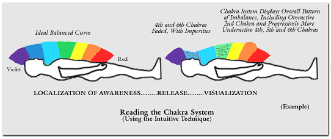

Reading The Chakra System
Treatment of energetic defects in the chakra system is a vital part of healing treatment, and each patient that you treat will, of course, present to you a unique combination of conditions in his or her chakras. The process of coming to a full understanding of the condition of your patient’s chakra system, prior to and all during treatment, is therefore important, and you will use three main tools to inform yourself: 1) intuitive reading and visualization of the chakra system of your patient, for the purpose of obtaining psychic information and guidance; 2) the reflection of chakra color on the back of your hand, during the first round of hand positions, and 3) your “felt sense,” or empathic sense of chakra condition, also during the first round of hand positions.
The information that you receive from these sources will be combined and used together, and this process of gaining a full and complete knowledge of the condition of your patient’s chakras will continue throughout treatment. You will seek information on undercharged chakras, unbalanced conditions in the chakra system and on chakras that require radiatory treatment (as a result of structural energetic defects). You will also, as during your viewing of the aura, seek more information on the meaning of the various phenomena you sense in the chakra system—on disease conditions, past or present life experiences or elements of the patient’s psychology that are related to these conditions. The first tool you will use to gain information on chakra condition is an intuitive visualization of the chakra system of your patient, very similar in method to the intuitive reading of the aura and chakras that you practiced in Chios Level II.
Sensing the Condition of the Chakras Through the Reception of Psychic Information and Guidance:
An intuitive reading (or visualization) of the chakra system is an effective tool for gaining information on which chakras are in need of charging and on whatever pattern of unbalance may be present in the chakra system. This information, whether from the healer’s own psychic senses or from the assistance of a guide, like all such information the healer uses, ultimately comes from the wider realm of pure consciousness, from the greater field of awareness that the healer cultivates a contact and communication with. Obtaining this psychic information or guidance is an effective way of gaining knowledge of the condition of the patient, in every aspect. A reading of the chakra system, using the intuitive and visualization ability of the healer, is therefore an effective perceptual tool. The chakras of your patient are checked for charge and balance in the following way:

Perform an intuitive reading by first concentrating on the body in profile—as it would appear with the patient lying on their back facing upwards. Imagine a rainbow shell of color, a gently curved rainbow traveling from the head of the patient’s body outline, where it is violet in color, to the area around the upper legs, where the color is red. You will see each of the seven true colors, with a boundary between the colors, along the length of the rainbow, and each color corresponds to that chakra. Briefly and effortlessly localize your awareness on this image using your active mind, knowing that you will shortly be getting information on which chakras are in need of charging or rebalancing, and then release into the receptive phase.
After releasing into the receptive phase, notice any changes in the colors exhibited in the chakra fields. Are there some chakras which are faded or which are diffused, muddied, watery, or smeared with color, or streaked with black or gray impurities? These are chakras in need of charging. Notice also the apparent height of the chakra fields, indicative of the level of activation of the chakras in the chakra system. Does the apparent level—the height—of the color bands of the chakras in the chakra system deviate from a flat, level state as you view across all seven chakras? If so this may be indicative of a pattern of imbalance in the chakra system.
Examine the pictures you have received of your patient’s chakra system in detail. Retain the overall picture in your mind, or perform several “rounds” of the active/receptive technique, and gain a full image of the chakra system. While gaining a complete visualization of your patient’s chakra system in your mind, visualize all the chakras within it restored to healthy hue and balance, in the same manner as was recommended for the layers of aura.
After a short period of practice using this technique, you may find that you no longer need to consciously follow the steps—that a visualization of the state of the patient’s chakra system will just appear in your mind’s eye. It will probably be possible for you to examine it, progressively, for details of each chakra, starting at the 1st chakra, for example, and moving upwards as you examine each for charge and balance, in detail.
Sensing of Chakra Color Hues During Hand Positions:
As you may have already begun practicing in Chios Level II, you may also sense the color hues of chakras in another way—from the way they illuminate the skin on the back of your hand.
In the first part of your treatment, while performing the usual hand positions on the front of the body, you may check the color of the chakra by observing, in your mind’s eye at first, the subtle color hue on the skin of the back of your own hand as you treat a particular chakra. While learning, this is achieved by performing an intuitive reading, focusing your active mind on the back of your hand during the active phase and then averting your eyes and releasing into the receptive phase to allow some impression of this subtle color hue on the skin surface on the back of your hand to form in your mind’s eye.
The general tone of the chakra color, with any impurities or discolorations, will appear as a subtle yet discernible hue, and will thus indicate whether or not that chakra is in need of charging. The color, apparently reflected in your skin, will be from the patient’s own chakra field, and illuminates your skin to your subtle sight. You will probably begin to see this in your mind’s eye, yet possibly with your physical eyes also. After a short period of practice using this technique, you may again find that you no longer need to consciously follow the steps—that a visualization of the color hue of each chakra as it appears on your skin will simply appear in your mind’s eye as you treat the chakras during the regular hand positions. Make note, during your first round of chakra positions, which chakras will require treatment to restore their color and purity.
This is also an excellent practice for beginning to see the chakra colors with your physical eyes. After seeing the color hue in the mind’s eye, you may also gaze at the hand, looking at the color hue with your physical eyes, and allowing yourself to see the hue, with any impurities.
Interpreting the Meaning of Colors in the Chakras, and the Connection Between the Appearance of the Chakras and Their Corresponding Layers of Aura:
Like the colors in the aura, the colors in the chakras can also be a source of information regarding the condition of the patient. It is good, when viewing the chakra colors using either of the above techniques, to also ask for information on the meaning of the colors you see—to do an intuitive reading requesting further information on whatever phenomena in the aura you are experiencing, or allowing this information to appear to you as you treat. You may get information, for example, on how smeared, muddied, discolored or weak colors in the chakras correlate to conditions you may have seen on the corresponding higher aura layer, and on how it correlates to disease conditions in the physical body (either currently manifesting or conditions which could manifest in the future as a result of energetic conditions present). You might see clear flecks of other colors in the chakra, which although may not correlate to disease may nevertheless contribute to your understanding of the current condition of your patient’s psychology and life experience. All of these will be helpful to you as you plan the course of treatment.
Impurities and disease conditions that appear in the chakras, as well as healthy energies which appear in them, will also appear in some form in their corresponding higher bodies. The chakras do not project the bodies, in terms of cause and effect, yet the chakras and their corresponding higher bodies are existences which mirror each other: the higher bodies show what is present in their chakras and vice versa.
Impurities in chakras and impurities in corresponding higher bodies are often found together. Impurities and energetic defects in chakras can result in susceptibility, in the higher bodies, to energetic defects. The higher layers of aura can therefore become impure, as a result of impurities in the chakras. It is as though energetic impurities filter through the aura and can become lodged in whichever of the various higher bodies may be susceptible, and neighboring higher bodies, like neighboring chakras, may become sullied as well.
The color of whatever impurities or healthy energies may be found in a chakra may not necessarily be the same as the colors of whatever impurities or healthy energies are found in the corresponding layer of aura. In the case of impurities, it is simply a fact that if impurity exists in a chakra it generally means that impurity will also be found in its corresponding higher body, and vice versa. There may be no direct connection between the nature of impurities found in a chakra and those found in its corresponding layer of aura, although your psychic sense may give you information which explains the nature of each, any connection that may exist, and how the entire condition occurred. Similarly, the color of whatever healthy energies may be found in a chakra may not be the same as the color of whatever healthy energies are in its corresponding higher layer of aura, although there will be a definite correspondence of “feel”—a feel perceptible to your psychic sense that will also inform you of the nature and meaning of the phenomena.
The overall state of impurity and/or health of a chakra will bear a correspondence to the state of impurity and/or health of its corresponding body. To treat impurities and disease conditions in a chakra will treat the corresponding higher body as well, and vice versa, although in practice the two will usually be treated together, when required. It is easier to focus on a chakra, in treatment, than a higher body, and so this method will often be used. An impure chakra can be the cause of impurities in the corresponding body, and treating the chakra can clear the body again. Your viewing of the higher bodies can provide additional information as to which chakras should be treated, and when treatment is effective and complete.
Empathic Perception of Chakras With Structural Energetic Defects:
The two techniques described above use a visual sense of the chakras in the chakra system to detect undercharged and unbalanced conditions. Structural energetic defects may also be present in certain chakras, however, yet these are detected in a different way—through the intuitive and empathic sense of the healer as the chakras are treated.
As you have felt in your healing work, the body and mind of the healer become “transparent” during the healing process, during which the healer ideally acts as a pure channel. The healer, while healing, is transparent to the energies and healing forces that come through during the healing process and is also clear and open to the energy field of the patient: the healer senses and becomes the patient and thereby senses the conditions therein. As you advance in your healing work, you will find that your intuitive sense of the patient and his or her condition will progress to an empathic sense—you will progress from knowing the condition of your patient using your intuition to sensing their actual condition, as if in yourself. The healer’s body (or emotions or mind) may mirror that of the patient, and the healer may therefore sense in themselves various conditions which require treatment. One important example of this phenomenon is the healer’s sensing, in his or her own chakras, chakras in the patient that have structural energetic defects—severe damage that requires treatment with the radiatory method.
During the first round of hand positions, you formed an assessment of the health of the body and the chakras, and you perhaps sensed chakras that were ill, in need of treatment. Some chakras may have merely required regular hand placement or unblocking to get the energy flowing, or charging to restore color or eliminate impurity, yet the chakra may be affected by structural energetic defects that cannot be treated with regular hand placement, unblocking or charging alone, and you will sense that more intensified treatment is necessary:
While performing the hand positions, do you sense a disfigured or damaged chakra suffering from such structural defects? You may sense, intuitively, almost as a pain in the chakra—a pain that seems to extend into the body and may also seem to extend and radiate outward through the layers of the being, the auric field layers. You may intuitively sense, or “see” in your mind’s eye, some detail of its disfigurement. It might even be a chakra with severe damage, possibly a chakra in crisis. Most importantly, however, do you sense this damage, or pain, empathically—in your own chakra? For a disfigured chakra, and especially a seriously damaged chakra, radiatory treatment will be necessary. You must rely on your intuitive sense, and on your sense of empathy to discern when a chakra only needs charging, or whether it has structural damage and requires the radiatory method. You may sense a damaged chakra as your own chakra, using your sense of empathy with the patient.
With all techniques for sensing chakra condition—for the sensing of blocked, undercharged, unbalanced and structurally defective chakras—it is important for the healer to remain open not only to the intuitive sensing of psychic information and guidance, the visual viewing, the empathic sensing and other perceptual techniques, but also to remain open to the overall development of a complete understanding, in the being of the healer, of the condition of the patient. The diseased condition of the chakra will often strike a chord in the healer, in various ways, corresponding to the condition of the chakras. The condition of the chakras in the chakra system should emerge as a felt sense—a “knowing” felt in the entire being that is an overall integrated assessment of the condition of the chakras that is the result of all the information gained. By gaining an entire sense of the condition of each chakra, throughout treatment, the healer custom-tailors the treatment to address each chakra’s needs, and is also aware of the correlations between chakra states and phenomena on the higher layers of aura and the psychology and life experience of the patient.
Integrating an Interpretation of Treatment Needs for the Chakra System:
As you practice the above techniques and gain experience in the various ways of sensing chakra condition, you will find that you are able to gain a real sense of the condition of each patient’s chakra system.
Undercharged Chakras are chakras which will have their color appear discolored, faded, impure or tainted in some way, as has been discussed. From combining the information you have received from your intuitive reading of the chakra system and from the sensing of color on your hand during the hand positions, you will get an integrated sense of the chakra color. You will know, by feel, what is healthy and what is not healthy in a chakra’s color and appearance. A chakra that is in need of charging will have a color that appears to your “sight” as sullied, impure and unhealthy. The hue will not be robust, and the color will not be appealing.
Although your examination of the chakra color during visualization of the body profile and on the back of your hand are your primary information sources regarding undercharged chakras, you will also gain some felt sense of chakras which are undercharged—you will sense a weakness and unhealthiness to the chakra, as well. An undercharged chakra will perceived not only by your “sight,” but by feel as well—to your entire being—as sullied, impure and unhealthy in its energy functioning.
Undercharged 3rd, 4th and 5th chakras are quite common, while undercharged 1st and 2nd chakras are somewhat less so, and undercharged 6th and 7th chakras are a little less common still. All chakras in the patient that you have detected as being undercharged, however, will need to be charged back to their normal, healthy hue.
Unbalanced chakras are detected primarily from your intuitive reading of the chakra system, and will have the boundary of the rainbow at their color extend beyond the others and “bump” upwards to indicate a chakra that is radiating too actively, or “dip” downwards, closer to the body, for a chakra that is underactive. As you examine the entire rainbow profile, you will note a pattern of imbalance. An examination of this curve—noting at which chakra points the curve bumps or dips—will indicate to you chakras that need their over- or under-activity corrected in order to bring the overall balance back to the system.
Although your examination of this curve is your primary source of information regarding imbalances in the chakras, you will also gain some felt sense of chakra imbalances. An overactive chakra will not merely be indicated by a “bump” in the profile during the intuitive reading of the chakra system, but will also often be perceived as having an overexcited, unsteady, even jagged-feeling quality to its energy. An underactive chakra will not merely appear as a “dip” in the profile, but also will be felt—in your entire being—as having a weakness or timidity in its energy.
There are not particular chakras which are more or less susceptible to imbalances, but there will almost always be a pattern of imbalance, as has been discussed. You will then proceed to rebalance those chakras which require it, thereby rebalancing the entire chakra system and bringing it back to a healthy and harmonious functioning.
Chakras with structural energetic defects are primarily sensed through the empathic sense of the healer, as discussed. The healer will often sense this condition as a pain in the chakra that radiates into the body and/or outward through the aura and chakra field. This empathic sense can often take the form of an actual or “ghost” physical sensation in the body of the healer at that chakra position. This sensation, when present, is evaluated in light of the healer’s overall impression of chakra condition, whether or not an impression is received of a structural energetic condition beyond the unblocked, undercharged or unbalanced state which is sensed through other means. This empathic sense can to some degree be confirmed through the overall impression of chakra condition that emerges in the being as various perceptual techniques are employed and as treatment proceeds.
Although the empathic sense is the primary way that a chakra with structural energetic defects is detected, such a chakra may be also sensed through the reception of psychic information and guidance before or during treatment. Information may be received that indicates that a certain chakra or chakras have this damage, perhaps including some visualization of the damage itself or its correlating conditions and/or cause in the psychology and life experience of the patient. Although this information may appear visually, it may also take the form of words, perhaps (hearing this information spoken in the mind). Even when the healer receives information that a chakra is affected this way, however, it is important to attempt to confirm it, or allow it to be confirmed, with the empathic sense of the chakra as may be felt during treatment.
You will detect this condition most often in the upper chakras—in the 4th, 5th, 6th and 7th. It will also sometimes appear in the 1st, 2nd and 3rd however, and whenever such chakras with structural energetic defects are found they must be treated with the radiatory method to correct their structure.
After coming to a good understanding of the condition of your patient’s chakra system, you may proceed with treatment, using the effective techniques detailed in the following pages. You will find that defects in the chakras will correlate well to unhealthy energetic conditions on the corresponding aura levels, and in other portions of the energy field which are influenced by detrimental conditions in certain chakras. Your assessment of treatment requirements for the chakras will lead you to specific treatment techniques, discussed in the balance of this manual, that will not merely treat the chakra(s) in need, but will also treat the higher bodies, too.
Learning to View the Chakras:
An advanced and optional step for gaining information on the condition of your patient’s chakra system is to attempt to learn to view the chakras directly.
When practicing the intuitive technique given above, for the purpose of learning to sense the condition of the chakras, you may at some point, if you wish, attempt to view the chakras—to confirm with your physical eyes the information seen in your mind’s eye. The sensing of the chakras using the psychic sight is a part of the process towards eventually becoming able to see the chakras, just as the intuitive reading of the auric field was a step in preparation towards beginning to view the aura. You may proceed in a similar way:
After gaining a sense of the patient’s chakras in your mind’s eye, using the visualization of the body profile as given before, look with your physical eyes—in a very non-focused, relaxed receptive condition—at the area around the body of the patient, from the same side-on perspective. Can you see very faint colored fields or bands where the chakras should be? Viewing the chakras from the side of the patient, you may see that the colors of the chakras are not completely separate—they merge above the body, as if in a faint mist or cloud of moving energy. They appear as in a rainbow, and the colors merge into a continuous band, so that it is difficult to say where one color becomes another—where indigo becomes violet, for example. After gaining some view of the chakras, you may even, at some point, be able to see phenomena in them, such as color impurities indicative of undercharged states, brightness or dimness or larger or smaller apparent size of the fields that are indicative of over or under-activity, or even structural energetic defects in the chakra “whirlpools.”
To see the chakras, however, is very difficult. They are difficult to see and will be the last part of the energy field to become visible to the eye. They can be felt, as you know, and a sense of their color can be gained with the psychic sight, yet they will begin to appear to the physical vision perhaps only as indefinable shapes, like clouds, even after much practice, and it will be some time before their complete structure can be seen in toto. As with learning to see anything this way, there is really a unity of intuitive and physical sight, and you are really seeing with your entire awareness, not moving from one sight to another, but combining all. It is difficult, also, to see the aura levels and the chakras at the same time. One can view the colors of the aura, or one can see the colors of the chakras, but it is very difficult to do both at once. It is something like the popular drawing where one can either see a vase, or two faces facing each other, but not both at the same time.
Source: http://www.chioshealing.com/HealingLevel3/ReadingChakraSystem/readingchakrasystem.htm